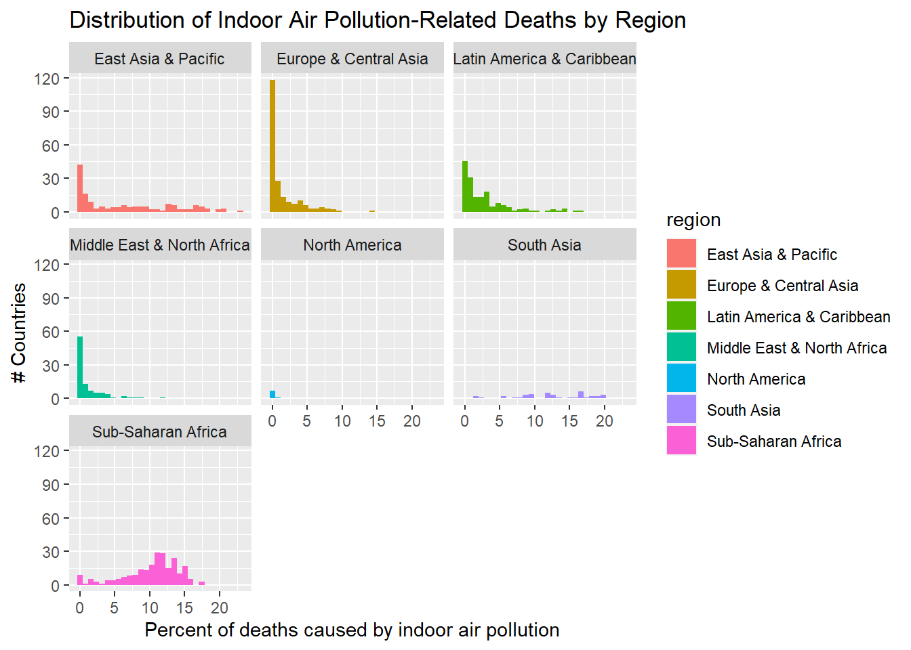
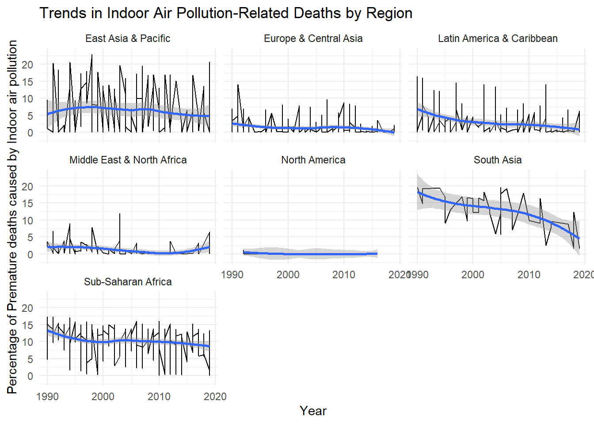
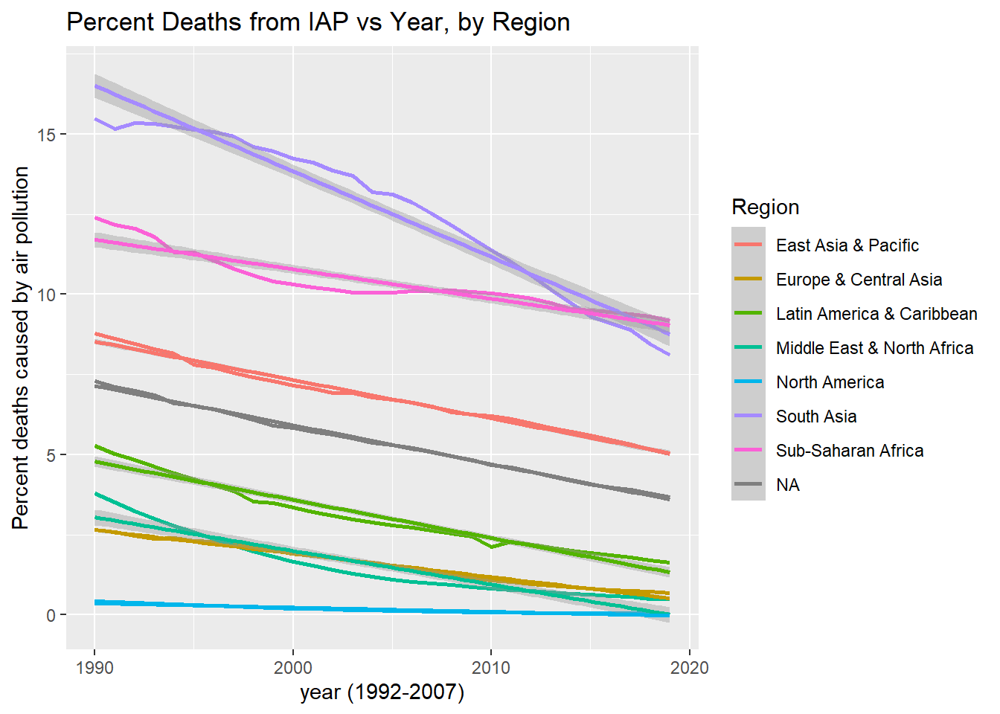

Premature deaths related to indoor air pollution data, largely from the combustion of bio fuels like wood and coal, is a leading cause of death for many middle- and lower- income countries around the globe, with major health implications for even the developed parts of the world. This analysis aims to assess and infer the impacts of geographic features and economic/political factors related to the percent of premature deaths caused by indoor air pollution countries across the globe. This data has been collected for almost three decades (1990-2019) and will be utilized in this analysis, along with a somewhat smaller dataset for some tests, to infer two important characteristics that may offer insight into the cause of inadequate/unsafe indoor conditions. Impact of GDP as a determinant of access to clean fuel alternatives and healthcare is expected to be the significant, if not most correlated factor of premature deaths from indoor air pollution. Secondly, this analysis will interpret the regional differences contribute to the average premature deaths in that geographic group.
Introduction
Since the earliest days of thinking about the dangers associated with pollution in the air, much of the conversation has been focused on the risks associated with our infrastructure –vehicles, energy, and manufacturing at the forefront. More recently, it has become apparent that we are also in need of considering the risks associated with out indoor air pollutants, which is now understood to be a source of premature deaths worthy of concern. Access to clean energy for households is one of the major challenges facing developing countries around the globe, with an estimated 3 billion impacted by the effects of indoor pollution and 4.3 of them suffering premature deaths in 2012 alone (Air quality and health, 2014) . The World Health Organization estimates that “Almost half of all deaths due to lower respiratory infection among children under 5 years of age are caused by inhaling particulate matter (soot) from household air pollution.” and also estimates that as much as 90% of the premature deaths related to indoor, or household air pollution are found in middle- or low- income countries (Air quality and health, 2014), a fact that may suggest several disparities such as access to healthcare, clean energy, and regulatory protections for what can be installed in residential homes.
Indoor air pollutants can become well over 100x more concentrated in large, poorly ventilated indoor spaces both public and private. Moreover it has been documented that people living in developed regions spend 80-90% of our lives indoors which suggests significant prolonged exposure, even in high-income countries (González-Martín et al., 2021). While “indoor pollutants” represents a wide range of potential pollutants, some like those generated from combustion of bio fuels have particularly dangerous health implications when burned indoors.
WHO considered Sub-Saharan Africa to be the most significantly impacted by the combined affects of rapid population growth with relatively poor economies, and even worse access to clean energy technologies (Air quality and health, 2014).
Some reports suggest as much as three billion individuals are impacted by toxic indoor air pollutants every day, with as many as 4 million deaths yearly being attributed to IAP exposure (Gordon et al., 2014)
Defining Indoor Air Pollutants
Volatile Organic Compounds: emitted from everyday household items such as aerosol cleaners, plastic products, furniture, paints, candles/scented items, adhesives, and many other products. VOCs are the least understood of the indoor air pollutants, and many have still yet to be identified, let alone medically understood.
The five most common VOCs include benzene, formaldehyde, methylene chloride, tetrachloroethylene, toluene, xylene, and 1,3-butadiene
Particulate matter: Dust, smoke, dirt, and other small particles created from many sources and suspended in moving air. Some of the most significant indoor air pollutants are produced by combustion from cooking, heating, or smoking. PM ranges from a mild irritant to a major cause of death depending on the concentration and extent of exposure.
Particulate matter represents the largest cause of premature deaths related to indoor air pollutants; Research has suggested that air pollution is responsible for 1 in 10 deaths globally (González-Martín et al., 2021).
Burning bio fuels like wood or crops produce significantly more hazardous particulate matter then fuels like ethanol or bio diesel. Wood contains heavy metals like arsenic, cadmium, and lead that can accumulate in soils and then get taken into the air, producing dust and ash from incomplete combustion. These sources of fuel are most common in developing countries, and regions with limited access to cleaner fuels.
Nitrogen Oxides: Also an aspect of biofuel combustion, NOx compounds are known to have significant adverse health affects affecting the respiratory and cardiovascular system, which has been linked to asthma, bronchitis, eye/skin/throat irritation, headaches & nausea as well as a weakened immune system
Carbon monoxide/dioxide: Both carbon monoxide and dioxide are hazardous in large concentrations and are produced by the combustion of all fuels, including gas. Carbon monoxide can be hazardous, with hundreds of deaths still caused in the US by accidental CO poisoning.
Radon: Second leading cause of lung cancer globally, radon is naturally released by soil, rocks, and water, which can release slowly and build up inside poorly ventilated homes.
Bio Fuels and the reason for global concern
In developed countries, regulatory requirements and consumer protections mean that most of the largest global threats have been largely minimized; homes are required to have chimneys for fireplaces, carbon monoxide sensors are a requirement for hotels and buildings with gas heaters or wood fireplaces. These preventative measure target the specific act of burning bio fuels inside homes which is by far the largest contributor to premature deaths caused by indoor air pollution, with a widely cited 2002 study by Ezzati and Kammen (2002) found bio fuel use is Uganda homes, related to three major activities (stove for cooking, heating water, and warmth), generated pollutant concentrations, particularly particulate matter as high as 140 times background levels. The risk associated to these indoor air pollutants from biofuels also represents a large contract from impact in males and females in a population, with Ezzati and Kammen (2002) finding women were receiving 75% of the exposure from being in increased proximity to household activities like cooking.
Determining Hypothesis with Testing Data
Table A: Describing the Variables
Code
# Create a data split containing 15% of the total dataset for exploratory analysis iap_splits <-initial_split(indoor_pollution, prop =0.15,pool =1)# Extract the training & Testing split from the data split and rename it as exploratory_dataexploratory_data <-training(iap_splits) ##Rename training splittest_data <-testing(iap_splits) ##Rename testing split# Select the first six rows of the exploratory_data datasethead(exploratory_data) %>%# Rename a column and format the table using kable() and kable_styling()rename(percent_deaths_by_household_pollution = deaths_cause_all_causes_risk_household_air_pollution_from_solid_fuels_sex_both_age_age_standardized_percent) %>%#shorten the long name kable(digits =c(1,0,0,2)) %>%##apply significant figure contstraints to the outputkable_styling(bootstrap_options =c("hover", "striped"))
entity
code
year
percent_deaths_by_household_pollution
Somalia
SOM
2001
14.75
Puerto Rico
PRI
2001
0.00
Costa Rica
CRI
2013
0.61
Tonga
TON
1999
8.42
Chile
CHL
2014
0.40
Trinidad and Tobago
TTO
2017
0.01
Observation:
This data set contains variables gathered across multiple years, listing the percent of deaths caused by indoor air pollutants created from indoor combustion. Given the amount of data present in this data set, several potential hypotheses could likely be considered.
The data, listed by country and region, are mixed in the data set and will likely require some cleaning to separate. categorical data and contains variables that were collected over many years.
Depending on the scope of research, it may be more useful to focus on the data set containing regional data rather than country-specific to highlight what role climate plays in the effect of indoor air pollution.
In temperate climates, it is more likely to use bio fuels for heating as well as cooking. Alongside the availability of insulation material for homes that reduced the ability for indoor and outdoor atmosphere gas exchange, this may be an essential factor that could be compared with this data.
Using the temporal variable that is available in this data, some inferences may be developed to correlate the rate at which different regions are improving compared to each other.
Grouping the data by region and providing some additional data about the average temperature would be interesting to see if, when accounting for all variables, the difference in climate has a significant impact on regional premature deaths from indoor air pollution.
Considering the data by country could provide some valuable insight into the impact of politics and economic factors on indoor pollution. It is likely that GDP is a major factor that would sum the impact of a country improving its access to clean energy technology, preventative regulations, and healthcare. Adding in additional data about country-specific metrics will be extremely valuable for this analysis.
Table B: Grouped Countries by Region
Code
exploratory_data %>%# Adding a new column to the datasetmutate(region =countrycode(entity, origin ="country.name", destination ="region")) %>%# Filtering out "entities" in the dataset that are not countriesfilter(region!=0) %>%## continent or region can be used# Grouping the dataset by region and entity, and summarizing the datagroup_by(region, entity) %>%summarise() %>%# Grouping the summarized data by region and reading out the new columngroup_by(region) %>%summarise("Unique Countries"=paste(unique(entity), collapse =", "))
Warning: There was 1 warning in `mutate()`.
ℹ In argument: `region = countrycode(entity, origin = "country.name",
destination = "region")`.
Caused by warning in `countrycode_convert()`:
! Some values were not matched unambiguously: Africa, African Region, African Union, America, Andean Latin America, Asia, Australasia, Caribbean, Central Asia, Central Europe, Central Europe, Eastern Europe, and Central Asia, Central Latin America, Central sub-Saharan Africa, Commonwealth, Commonwealth High Income, Commonwealth Low Income, Commonwealth Middle Income, East Asia, East Asia & Pacific - World Bank region, Eastern Europe, Eastern Mediterranean Region, Eastern sub-Saharan Africa, England, Europe, Europe & Central Asia - World Bank region, European Region, European Union, G20, High-income, High-income Asia Pacific, High-income North America, High-middle SDI, High SDI, Latin America & Caribbean - World Bank region, Low-middle SDI, Low SDI, Micronesia (country), Middle East & North Africa, Middle SDI, Nordic Region, North Africa and Middle East, North America, Northern Ireland, Oceania, OECD Countries, Region of the Americas, Scotland, South-East Asia Region, South Asia - World Bank region, Southeast Asia, Southeast Asia, East Asia, and Oceania, Southern Latin America, Southern sub-Saharan Africa, Sub-Saharan Africa - World Bank region, Timor, Tropical Latin America, Wales, Western Europe, Western Pacific Region, Western sub-Saharan Africa, World, World Bank High Income, World Bank Low Income, World Bank Lower Middle Income, World Bank Upper Middle Income
`summarise()` has grouped output by 'region'. You can override using the
`.groups` argument.
# A tibble: 7 × 2
region `Unique Countries`
<chr> <chr>
1 East Asia & Pacific American Samoa, Australia, Brunei, Cambodia, China…
2 Europe & Central Asia Albania, Andorra, Armenia, Austria, Azerbaijan, Be…
3 Latin America & Caribbean Antigua and Barbuda, Argentina, Bahamas, Barbados,…
4 Middle East & North Africa Algeria, Bahrain, Djibouti, Egypt, Iran, Iraq, Isr…
5 North America Bermuda, Canada, United States
6 South Asia Afghanistan, Bangladesh, Bhutan, India, Maldives, …
7 Sub-Saharan Africa Angola, Benin, Botswana, Burkina Faso, Burundi, Ca…
Code
## could not figure out how to make this show the entire list of countries, even in the notebook output.
Graph A: Distribution of Observations by Year
Code
exploratory_data %>%ggplot()+geom_bar(aes(year),color="blue")+labs(title="Distribution of observations by Year",y ="# Observations")
Observations
This data shows the distribution of variables across several years.
This spread suggests there is a lot of value in interpreting this data by year. This could provide several different benefits for interpreting the data assuming that year is a valuable predictor for the change in premature deaths by country or region. comparing the rate of change between regions could be an interesting visualization to see where progress is being made, and if there were any major periods of regression.
It seems that the quantity of variables spread across this time span eliminates any hypothesis that would not involve a temporal comparison. If focusing on a single-year comparison becomes functional to the goals of this analysis, it may be valuable to pick a year with the most variables since they are not all the same.
Table C: Single Variable Regression Analysis – Indoor Air Pollution and Year
Analyzing the relationship between the percent deaths caused by indoor air pollution and the year can provide valuable insights into the trends and patterns of indoor air pollution over time. By understanding how the percentage of deaths caused by indoor air pollution changes with time, policymakers and public health experts can make informed decisions regarding measures to reduce indoor air pollution and its associated health risks. Additionally, by using regression analysis, it is possible to quantify the strength and direction of the relationship between the percent deaths caused by indoor air pollution and the year. This information can help to identify whether the relationship is linear or non-linear, which can be useful in developing targeted interventions to address indoor air pollution.
Warning: There was 1 warning in `mutate()`.
ℹ In argument: `Regions = countrycode(entity, origin = "country.name",
destination = "region")`.
Caused by warning in `countrycode_convert()`:
! Some values were not matched unambiguously: Africa, African Region, African Union, America, Andean Latin America, Asia, Australasia, Caribbean, Central Asia, Central Europe, Central Europe, Eastern Europe, and Central Asia, Central Latin America, Central sub-Saharan Africa, Commonwealth, Commonwealth High Income, Commonwealth Low Income, Commonwealth Middle Income, East Asia, East Asia & Pacific - World Bank region, Eastern Europe, Eastern Mediterranean Region, Eastern sub-Saharan Africa, England, Europe, Europe & Central Asia - World Bank region, European Region, European Union, G20, High-income, High-income Asia Pacific, High-income North America, High-middle SDI, High SDI, Latin America & Caribbean - World Bank region, Low-middle SDI, Low SDI, Micronesia (country), Middle East & North Africa, Middle SDI, Nordic Region, North Africa and Middle East, North America, Northern Ireland, Oceania, OECD Countries, Region of the Americas, Scotland, South-East Asia Region, South Asia - World Bank region, Southeast Asia, Southeast Asia, East Asia, and Oceania, Southern Latin America, Southern sub-Saharan Africa, Sub-Saharan Africa - World Bank region, Timor, Tropical Latin America, Wales, Western Europe, Western Pacific Region, Western sub-Saharan Africa, World, World Bank High Income, World Bank Low Income, World Bank Lower Middle Income, World Bank Upper Middle Income
Code
model_region_temp <-linear_reg() %>%set_engine("lm") #construct model instancemodel_region_reg<-recipe(percent_deaths_by_IAP~year,data = model_data)#generate a recipe -- what variables do we have in y = mx+bmodel_region<-workflow() %>%add_model(model_region_temp) %>%add_recipe(model_region_reg) #combine the model and recipe to generate a regression analysismodel_region_fit <- model_region %>%fit(model_data) model_region_fit %>%glance() %>%kable(digits=c(4,4,2,4,0,0,2,2,2,2,0,0)) %>%kable_styling(bootstrap_options =c("hover", "striped"))
r.squared
adj.r.squared
sigma
statistic
p.value
df
logLik
AIC
BIC
deviance
df.residual
nobs
0.0194
0.0183
5.65
17.5788
0
1
-2802.62
5611.24
5625.61
28321.13
888
890
Code
# looking to build a regression analysis to determine if a correltion can be seen in the data. prediction is decreasing n over time grouped by region
This regression analysis provides some useful information that will be valuable to repeat with the entire data set.
r-squared value: Describes how well the variables fit the dependent variable (model) and describe the data. The higher the R^2 value, the more significant the relationship between the model and the predictor. the r-squared value suggests that between some percent of the deaths caused by IAP in this data set is explained by the year variable. This will be important to rerun for the full data set.
P-value: this is the statistical variable generated to describe if the prediction that year has a statistically significant impact on the % deaths per year. The small p-value suggests year will show a correlation to a decrease in n in a larger population, even if the overall impact is relatively small.
Table D: Percent Premature Deaths caused by Air pollution – Global averages Summary
Code
exploratory_data %>%mutate(country_region =countrycode(entity, origin ="country.name", destination ="region")) %>%filter(country_region!=0) %>%rename("percent_iap"= deaths_cause_all_causes_risk_household_air_pollution_from_solid_fuels_sex_both_age_age_standardized_percent) %>%group_by(country_region) %>%summarize("Lowest percentage of deaths"=min(percent_iap),"Highest percentage of deaths"=max(percent_iap),"Average percentage of deaths"=mean(percent_iap),"Standard Deviation"=sd(percent_iap),'Number of Variables Measured'=length(unique(entity))) %>%kable(digits =c(1,3,1,2,1)) %>%kable_styling(bootstrap_options =c("hover", "striped"))
Warning: There was 1 warning in `mutate()`.
ℹ In argument: `country_region = countrycode(entity, origin = "country.name",
destination = "region")`.
Caused by warning in `countrycode_convert()`:
! Some values were not matched unambiguously: Africa, African Region, African Union, America, Andean Latin America, Asia, Australasia, Caribbean, Central Asia, Central Europe, Central Europe, Eastern Europe, and Central Asia, Central Latin America, Central sub-Saharan Africa, Commonwealth, Commonwealth High Income, Commonwealth Low Income, Commonwealth Middle Income, East Asia, East Asia & Pacific - World Bank region, Eastern Europe, Eastern Mediterranean Region, Eastern sub-Saharan Africa, England, Europe, Europe & Central Asia - World Bank region, European Region, European Union, G20, High-income, High-income Asia Pacific, High-income North America, High-middle SDI, High SDI, Latin America & Caribbean - World Bank region, Low-middle SDI, Low SDI, Micronesia (country), Middle East & North Africa, Middle SDI, Nordic Region, North Africa and Middle East, North America, Northern Ireland, Oceania, OECD Countries, Region of the Americas, Scotland, South-East Asia Region, South Asia - World Bank region, Southeast Asia, Southeast Asia, East Asia, and Oceania, Southern Latin America, Southern sub-Saharan Africa, Sub-Saharan Africa - World Bank region, Timor, Tropical Latin America, Wales, Western Europe, Western Pacific Region, Western sub-Saharan Africa, World, World Bank High Income, World Bank Low Income, World Bank Lower Middle Income, World Bank Upper Middle Income
country_region
Lowest percentage of deaths
Highest percentage of deaths
Average percentage of deaths
Standard Deviation
Number of Variables Measured
East Asia & Pacific
0.005
22.7
6.73
6.7
34
Europe & Central Asia
0.002
13.5
1.41
2.6
52
Latin America & Caribbean
0.003
14.3
2.97
3.4
35
Middle East & North Africa
0.001
9.0
1.09
2.1
20
North America
0.003
0.9
0.20
0.3
3
South Asia
2.320
19.7
13.49
4.8
8
Sub-Saharan Africa
0.050
17.3
10.71
3.8
48
Observations
While my research in the introduction states the the most impact region is Sub-Saharan Africa, this table seems to suggest that South Asia is equally as bad if not worse with a higher average, minimum, and maximum of percent deaths. These two regions will be interesting to consider in comparison to each other; potentially some characteristics about this data are misleading due to the small sample size (only 8 variables are measured in S. Asia). A more thorough summary of the full data set may come in closer agreement with WHO’s estimates.
Can environmental factors be considered? N. America has a lot of rich natural resources and mild climates that, among other factors, have enabled its success in terms of providing humanitarian needs to a large population.
Areas where temperatures are very cold probably have more insulated homes burning bio fuels on top of cooking with combustion. Can a correlation be made suggesting that, despite economic wealth per capita, IAP caused by combustion is a bigger issue in Northern countries? This would likely only apply to countries that have not reached “western civilization” levels of wealth
Graph B: Bland-Altman Plot – relationship between current percentages of IAP deaths and change over time (1995-2015)
Code
BA_plot <- exploratory_data %>%#Bland-Altman plots show the relationship between two paried variables to determine how much change is .mutate(country_region =countrycode(entity, origin ="country.name", destination ="region")) %>%filter(country_region!=0) %>%rename("percent_iap"= deaths_cause_all_causes_risk_household_air_pollution_from_solid_fuels_sex_both_age_age_standardized_percent) %>%mutate(year =paste0("Y", year)) %>%spread(year, percent_iap) %>%mutate(current = Y2015,change = Y2015 - Y1995)
Warning: There was 1 warning in `mutate()`.
ℹ In argument: `country_region = countrycode(entity, origin = "country.name",
destination = "region")`.
Caused by warning in `countrycode_convert()`:
! Some values were not matched unambiguously: Africa, African Region, African Union, America, Andean Latin America, Asia, Australasia, Caribbean, Central Asia, Central Europe, Central Europe, Eastern Europe, and Central Asia, Central Latin America, Central sub-Saharan Africa, Commonwealth, Commonwealth High Income, Commonwealth Low Income, Commonwealth Middle Income, East Asia, East Asia & Pacific - World Bank region, Eastern Europe, Eastern Mediterranean Region, Eastern sub-Saharan Africa, England, Europe, Europe & Central Asia - World Bank region, European Region, European Union, G20, High-income, High-income Asia Pacific, High-income North America, High-middle SDI, High SDI, Latin America & Caribbean - World Bank region, Low-middle SDI, Low SDI, Micronesia (country), Middle East & North Africa, Middle SDI, Nordic Region, North Africa and Middle East, North America, Northern Ireland, Oceania, OECD Countries, Region of the Americas, Scotland, South-East Asia Region, South Asia - World Bank region, Southeast Asia, Southeast Asia, East Asia, and Oceania, Southern Latin America, Southern sub-Saharan Africa, Sub-Saharan Africa - World Bank region, Timor, Tropical Latin America, Wales, Western Europe, Western Pacific Region, Western sub-Saharan Africa, World, World Bank High Income, World Bank Low Income, World Bank Lower Middle Income, World Bank Upper Middle Income
While this does not describe a large number of variables, the graph tells us that although some countries still have very high levels of current deaths caused by indoor air pollution, the general direction is a decreasing amount of indoor air pollution
data points in the top left corner mean that there has not been a significant amount of change between 2019 and 1995, nor was there a significant amount of deaths to begin with.
No points are present in the top right, which would suggest countries that have very high percent deaths by indoor air pollution, and have not significantly reduced those rates since 1995
Points towards the bottom right suggest countries that have made significant progress since 1995, but still remain having high rates of premature deaths from iap
Considering how few points are on this graph it would be hard to make any generalized predictions about what we would expect from the rest of the data, let alone the entire data set. one thing that is likely being demonstrated by this graph despite the small sample size, is that most countries will likely be trending down in percent of premature deaths from indoor air pollution.
Table E: Percent Premature Deaths caused by Air pollution – 2014-2019
Code
exploratory_data %>%filter(year>2014) %>%rename(percent_iap = deaths_cause_all_causes_risk_household_air_pollution_from_solid_fuels_sex_both_age_age_standardized_percent) %>%mutate("Regions"=countrycode(entity, origin ="country.name", destination="region" )) %>%filter(!is.na(Regions)) %>%group_by(Regions) %>%summarize( "Lowest percentage of deaths"=min(percent_iap),"Highest percentage of deaths"=max(percent_iap),"Average percentage of deaths"=mean(percent_iap),"Standard Deviation"=sd(percent_iap),'Number of Variables Measured'=length(unique(entity))) %>%kable(digits =c(0,4,4,0)) %>%kable_styling(bootstrap_options =c("hover", "striped"))
Warning: There was 1 warning in `mutate()`.
ℹ In argument: `Regions = countrycode(entity, origin = "country.name",
destination = "region")`.
Caused by warning in `countrycode_convert()`:
! Some values were not matched unambiguously: Africa, African Union, Andean Latin America, Central Asia, Central Latin America, Commonwealth, Commonwealth Low Income, Commonwealth Middle Income, East Asia & Pacific - World Bank region, Eastern sub-Saharan Africa, England, Europe & Central Asia - World Bank region, European Region, High-income, High-income Asia Pacific, High-income North America, High-middle SDI, Latin America & Caribbean - World Bank region, Low SDI, Micronesia (country), Middle East & North Africa, Nordic Region, Region of the Americas, Scotland, South-East Asia Region, Southeast Asia, Southeast Asia, East Asia, and Oceania, Southern sub-Saharan Africa, Sub-Saharan Africa - World Bank region, Timor, Tropical Latin America, Western Pacific Region, Western sub-Saharan Africa, World, World Bank High Income, World Bank Low Income
Regions
Lowest percentage of deaths
Highest percentage of deaths
Average percentage of deaths
Standard Deviation
Number of Variables Measured
East Asia & Pacific
0.0046
18.6228
5
6
19
Europe & Central Asia
0.0022
6.5176
1
2
26
Latin America & Caribbean
0.0119
13.9483
3
3
19
Middle East & North Africa
0.0007
7.2581
1
2
15
North America
0.0030
0.0055
0
0
2
South Asia
9.0752
12.0990
11
2
2
Sub-Saharan Africa
0.0505
15.1508
9
4
26
Observations
This data summarizes the variables from only 2014-2019 to see a comparison of all the countries in recent years. Something that can be inferred from this data is that some countries have a significantly more significant standard deviation then others.
While South Asia and Sub-Saharan Africa have the highest average, the deviation is much suggesting most of the variables (countries) measured in this time span are relatively close to the 10.00 % mean percent deaths by IAP
East Asia & Pacific are significantly lower in percent deaths by IAP at nearly half of the previously mentioned, however, the standard deviation is over 1% greater then either South Asia or Sub-Saharan Africa, suggesting that some countries could be significantly worse off then most.
although Middle East & North Africa does not have a particularly large standard deviation, it is the largest in comparison to its average. This Region along with Latin America & Caribbean do not fit this theory as nicely, and show the need for economic factors that play a role in deaths caused by pollution.
This will be important for my hypothesis, since the geographic position of East Asia & pacific would likely make climate an interesting factor for comparison.
Regions with the lowest deviation from the mean were Europe & Central Asia as well as North America (despite lacking a stawithon, it is only made up of 3 countries and likely deviated minimally
Graph C: Distribution percentages of Premature Deaths from IAP, grouped by Region
Code
exploratory_data %>%rename(percent_iap = deaths_cause_all_causes_risk_household_air_pollution_from_solid_fuels_sex_both_age_age_standardized_percent) %>%mutate(region =countrycode(entity, origin ="country.name", destination ="region")) %>%mutate(continent =countrycode (entity, origin ="country.name", destination ="continent")) %>%filter(continent!=0) %>%ggplot() +#Histograms are useful for visualizing range, tendency, and outliers of a set of continuous or discrete variables.geom_histogram(mapping =aes(fill = region, x= percent_iap,na.rm =TRUE)) +facet_wrap(~region) +## seperate into distinct graphs using regionlabs(x ="Percent of deaths caused by indoor air pollution",y ="# Countries",title ="Distribution of Indoor Air Pollution-Related Deaths by Region")
Warning: There was 1 warning in `mutate()`.
ℹ In argument: `region = countrycode(entity, origin = "country.name",
destination = "region")`.
Caused by warning in `countrycode_convert()`:
! Some values were not matched unambiguously: Africa, African Region, African Union, America, Andean Latin America, Asia, Australasia, Caribbean, Central Asia, Central Europe, Central Europe, Eastern Europe, and Central Asia, Central Latin America, Central sub-Saharan Africa, Commonwealth, Commonwealth High Income, Commonwealth Low Income, Commonwealth Middle Income, East Asia, East Asia & Pacific - World Bank region, Eastern Europe, Eastern Mediterranean Region, Eastern sub-Saharan Africa, England, Europe, Europe & Central Asia - World Bank region, European Region, European Union, G20, High-income, High-income Asia Pacific, High-income North America, High-middle SDI, High SDI, Latin America & Caribbean - World Bank region, Low-middle SDI, Low SDI, Micronesia (country), Middle East & North Africa, Middle SDI, Nordic Region, North Africa and Middle East, North America, Northern Ireland, Oceania, OECD Countries, Region of the Americas, Scotland, South-East Asia Region, South Asia - World Bank region, Southeast Asia, Southeast Asia, East Asia, and Oceania, Southern Latin America, Southern sub-Saharan Africa, Sub-Saharan Africa - World Bank region, Timor, Tropical Latin America, Wales, Western Europe, Western Pacific Region, Western sub-Saharan Africa, World, World Bank High Income, World Bank Low Income, World Bank Lower Middle Income, World Bank Upper Middle Income
Warning: There was 1 warning in `mutate()`.
ℹ In argument: `continent = countrycode(entity, origin = "country.name",
destination = "continent")`.
Caused by warning in `countrycode_convert()`:
! Some values were not matched unambiguously: Africa, African Region, African Union, America, Andean Latin America, Asia, Australasia, Caribbean, Central Asia, Central Europe, Central Europe, Eastern Europe, and Central Asia, Central Latin America, Central sub-Saharan Africa, Commonwealth, Commonwealth High Income, Commonwealth Low Income, Commonwealth Middle Income, East Asia, East Asia & Pacific - World Bank region, Eastern Europe, Eastern Mediterranean Region, Eastern sub-Saharan Africa, England, Europe, Europe & Central Asia - World Bank region, European Region, European Union, G20, High-income, High-income Asia Pacific, High-income North America, High-middle SDI, High SDI, Latin America & Caribbean - World Bank region, Low-middle SDI, Low SDI, Micronesia (country), Middle East & North Africa, Middle SDI, Nordic Region, North Africa and Middle East, North America, Northern Ireland, Oceania, OECD Countries, Region of the Americas, Scotland, South-East Asia Region, South Asia - World Bank region, Southeast Asia, Southeast Asia, East Asia, and Oceania, Southern Latin America, Southern sub-Saharan Africa, Sub-Saharan Africa - World Bank region, Timor, Tropical Latin America, Wales, Western Europe, Western Pacific Region, Western sub-Saharan Africa, World, World Bank High Income, World Bank Low Income, World Bank Lower Middle Income, World Bank Upper Middle Income
Warning in geom_histogram(mapping = aes(fill = region, x = percent_iap, :
Ignoring unknown aesthetics: na.rm
`stat_bin()` using `bins = 30`. Pick better value with `binwidth`.

Observations
these graphs show variables taken across a range of 30 years where the number of deaths in the country attributed to indoor air pollution caused by the combustion of bio fuels. each graph represents a distribution of these variables grouped by region. There is a clear tendency in most regions towards 0% deaths by IAP, except for Sub-Saharan Africa that is clustered between 10-15%, and South Asia that is evenly distributed between 5 and 20% premature deaths by IAP.
East Asia & Pacific contains a large distribution of countries with different rates of death. there is a larger amount of countries in east asia with a very low percentage of deaths for this cause.
Europe and Central Asia has the largest amount of variables measured at 0 percent deaths caused by IAP (over 125) compared to any other region. Nearly all variables in this region are below 10 percent deaths by IAP, but a fairly large amount of variables fall between 1% and 5%.
Latin America & Caribbean data is relatively spread out across 0% through 5% with over 100 countries in this group. there are a a smaller number of countries spread between 6% and 15% with no species over 15 percent.
Middle East and North Africa does not contain a large number of countries in the histogram (less then 100). The largest portion are between 0% and 5%, relatively low levels compared to other countries like East Asia and Sub-Saharan Africa.
North America is represented by the fewest countries of any region in this comparison. Considering that two of these countries are the U.S and Canada it is not suprising that there are a very low percentage of deaths per year caused by indoor air pollution.
South Asia is not represented by any countries that are 0 or even nearly 0% deaths caused by IAP from bio fuels. Although this region has ~50 variables, the % death ranges from a minimum of 4% to as high as 19%.
Sub-Saharan Africa is represented by a larger number of variables that are in the 5%-15% range. this region will likely provide an interesting year-to-year comparison that could show improvement over time.
because these variables are taken across such a wide temporal scale, it does not serve as a distinctly insightful comparison. Still, some things can be inferred.
Graph D: Change in Percent Deaths by Region and Year (1990-2020)
Code
exploratory_data %>%rename(percent_iap = deaths_cause_all_causes_risk_household_air_pollution_from_solid_fuels_sex_both_age_age_standardized_percent) %>%mutate("region"=countrycode(entity,origin ="country.name",destination="region")) %>%filter(!is.na(region)) %>%ggplot(aes(year, percent_iap, group =interaction(region,mean(percent_iap),color = region ))) +geom_line() +facet_wrap(~region)+geom_smooth() +labs(x ="Year", y ="Percentage of Premature deaths caused by Indoor air pollution", title ="Trends in Indoor Air Pollution-Related Deaths by Region") +# Add labels to the axes and titletheme_minimal() # Apply a minimal theme to the plot
Warning: There was 1 warning in `mutate()`.
ℹ In argument: `region = countrycode(entity, origin = "country.name",
destination = "region")`.
Caused by warning in `countrycode_convert()`:
! Some values were not matched unambiguously: Africa, African Region, African Union, America, Andean Latin America, Asia, Australasia, Caribbean, Central Asia, Central Europe, Central Europe, Eastern Europe, and Central Asia, Central Latin America, Central sub-Saharan Africa, Commonwealth, Commonwealth High Income, Commonwealth Low Income, Commonwealth Middle Income, East Asia, East Asia & Pacific - World Bank region, Eastern Europe, Eastern Mediterranean Region, Eastern sub-Saharan Africa, England, Europe, Europe & Central Asia - World Bank region, European Region, European Union, G20, High-income, High-income Asia Pacific, High-income North America, High-middle SDI, High SDI, Latin America & Caribbean - World Bank region, Low-middle SDI, Low SDI, Micronesia (country), Middle East & North Africa, Middle SDI, Nordic Region, North Africa and Middle East, North America, Northern Ireland, Oceania, OECD Countries, Region of the Americas, Scotland, South-East Asia Region, South Asia - World Bank region, Southeast Asia, Southeast Asia, East Asia, and Oceania, Southern Latin America, Southern sub-Saharan Africa, Sub-Saharan Africa - World Bank region, Timor, Tropical Latin America, Wales, Western Europe, Western Pacific Region, Western sub-Saharan Africa, World, World Bank High Income, World Bank Low Income, World Bank Lower Middle Income, World Bank Upper Middle Income
`geom_smooth()` using method = 'loess' and formula = 'y ~ x'

Observations
These graphs seem to give some very valuable comparative evidence for both the value of region and time based analysis. Some things that can be seen as trends in this graph would be the downward trend downward that can be seen at the global scale.
Europe & Central Asia, Latin America & Caribbean , Middle East & North Africa and North America were relatively low compared to East Asia & Pacific, South Asia and Sub-Saharan Africa.
While this is a global issue, this graph fairly clearly justifies the assumption that there will be a major regional difference seen in the data. it is not clear how well this analysis will be able to describe the cause for such a large difference besides the general claim of access to technology capable of preventing indoor pollution-related premature deaths are readily available in higher GDP regions.
It would be interesting to see how cases of diseases and infections related to household air pollution compare on a regional scale; although developed nations are able to prevent premature death, it is still a prevalent topic even in the US where the Biden administration is attempting to pass a widely politicized, but arguably wise legislative agenda beginning the transition to electric stoves for cooking, especially in small apartment buildings and homes.
Table F: Percent Deaths Caused by Indoor Air Pollution and Region
Code
exploratory_data %>%rename(percent_iap = deaths_cause_all_causes_risk_household_air_pollution_from_solid_fuels_sex_both_age_age_standardized_percent) %>%mutate(region =countrycode(entity, origin ="country.name", destination ="region")) %>%filter(!is.na(region)) %>%group_by(region) %>%summarize(total_percent_iap =sum(percent_iap)) %>%mutate(percent_iap = total_percent_iap /sum(total_percent_iap)) %>%##only way I found to summarize the percent iap by regionggplot(aes(x = region, y = percent_iap, fill = percent_iap)) +geom_bar(stat ="identity") +scale_y_continuous(labels = scales::percent_format()) +theme(axis.text.x =element_text(angle =45, hjust =1))
Warning: There was 1 warning in `mutate()`.
ℹ In argument: `region = countrycode(entity, origin = "country.name",
destination = "region")`.
Caused by warning in `countrycode_convert()`:
! Some values were not matched unambiguously: Africa, African Region, African Union, America, Andean Latin America, Asia, Australasia, Caribbean, Central Asia, Central Europe, Central Europe, Eastern Europe, and Central Asia, Central Latin America, Central sub-Saharan Africa, Commonwealth, Commonwealth High Income, Commonwealth Low Income, Commonwealth Middle Income, East Asia, East Asia & Pacific - World Bank region, Eastern Europe, Eastern Mediterranean Region, Eastern sub-Saharan Africa, England, Europe, Europe & Central Asia - World Bank region, European Region, European Union, G20, High-income, High-income Asia Pacific, High-income North America, High-middle SDI, High SDI, Latin America & Caribbean - World Bank region, Low-middle SDI, Low SDI, Micronesia (country), Middle East & North Africa, Middle SDI, Nordic Region, North Africa and Middle East, North America, Northern Ireland, Oceania, OECD Countries, Region of the Americas, Scotland, South-East Asia Region, South Asia - World Bank region, Southeast Asia, Southeast Asia, East Asia, and Oceania, Southern Latin America, Southern sub-Saharan Africa, Sub-Saharan Africa - World Bank region, Timor, Tropical Latin America, Wales, Western Europe, Western Pacific Region, Western sub-Saharan Africa, World, World Bank High Income, World Bank Low Income, World Bank Lower Middle Income, World Bank Upper Middle Income
Warning: There was 1 warning in `mutate()`.
ℹ In argument: `region = countrycode(entity, origin = "country.name",
destination = "region")`.
Caused by warning in `countrycode_convert()`:
! Some values were not matched unambiguously: Africa, African Region, African Union, America, Andean Latin America, Asia, Australasia, Caribbean, Central Asia, Central Europe, Central Europe, Eastern Europe, and Central Asia, Central Latin America, Central sub-Saharan Africa, Commonwealth, Commonwealth High Income, Commonwealth Low Income, Commonwealth Middle Income, East Asia, East Asia & Pacific - World Bank region, Eastern Europe, Eastern Mediterranean Region, Eastern sub-Saharan Africa, England, Europe, Europe & Central Asia - World Bank region, European Region, European Union, G20, High-income, High-income Asia Pacific, High-income North America, High-middle SDI, High SDI, Latin America & Caribbean - World Bank region, Low-middle SDI, Low SDI, Micronesia (country), Middle East & North Africa, Middle SDI, Nordic Region, North Africa and Middle East, North America, Northern Ireland, Oceania, OECD Countries, Region of the Americas, Scotland, South-East Asia Region, South Asia - World Bank region, Southeast Asia, Southeast Asia, East Asia, and Oceania, Southern Latin America, Southern sub-Saharan Africa, Sub-Saharan Africa - World Bank region, Timor, Tropical Latin America, Wales, Western Europe, Western Pacific Region, Western sub-Saharan Africa, World, World Bank High Income, World Bank Low Income, World Bank Lower Middle Income, World Bank Upper Middle Income
Code
model_region_temp <-linear_reg() %>%set_engine("lm") #construct model instancemodel_region_reg<-recipe(percent_deaths_by_IAP~region,data = model_data)#generate a recipe -- what variables do we have in y = mx+bmodel_region<-workflow() %>%add_model(model_region_temp) %>%add_recipe(model_region_reg) #combine the model and recipe to generate a regression analysismodel_region_fit <- model_region %>%fit(model_data) model_region_fit %>%glance() %>%kable(digits=c(4,4,2,4,0,0,2,2,2,2,0,0)) %>%kable_styling(bootstrap_options =c("hover", "striped"))
r.squared
adj.r.squared
sigma
statistic
p.value
df
logLik
AIC
BIC
deviance
df.residual
nobs
0.5214
0.5182
3.96
160.3308
0
6
-2483.42
4982.84
5021.17
13822.67
883
890
Code
# looking to build a regression analysis to determine if a correltion can be seen in the data. prediction is decreasing n over time grouped by region
Table G: Single Variable Regression Analysis – Correlation Between Percent Deaths Caused by Indoor Air Pollution and Country
Code
model_data<- exploratory_data %>%rename("percent_deaths_by_IAP"= deaths_cause_all_causes_risk_household_air_pollution_from_solid_fuels_sex_both_age_age_standardized_percent)model_region_temp <-linear_reg() %>%set_engine("lm") #construct model instancemodel_region_reg<-recipe(percent_deaths_by_IAP~entity,data = model_data)#generate a recipe -- what variables do we have in y = mx+bmodel_region<-workflow() %>%add_model(model_region_temp) %>%add_recipe(model_region_reg) #combine the model and recipe to generate a regression analysismodel_region_fit <- model_region %>%fit(model_data) model_region_fit %>%glance() %>%kable(digits=c(4,4,2,4,0,0,2,2,2,2,0,0)) %>%kable_styling(bootstrap_options =c("hover", "striped"))
r.squared
adj.r.squared
sigma
statistic
p.value
df
logLik
AIC
BIC
deviance
df.residual
nobs
0.9557
0.9432
1.32
76.4651
0
264
-1890.17
4312.34
5666.52
1637.12
936
1201
Code
# looking to build a regression analysis to determine if a correltion can be seen in the data. prediction is decreasing n over time grouped by region
Table H: Multiple Variable Regression Analysis – Determining correlation to premature deaths from IAP between region and year
Warning: There was 1 warning in `mutate()`.
ℹ In argument: `region = countrycode(entity, origin = "country.name",
destination = "region")`.
Caused by warning in `countrycode_convert()`:
! Some values were not matched unambiguously: Africa, African Region, African Union, America, Andean Latin America, Asia, Australasia, Caribbean, Central Asia, Central Europe, Central Europe, Eastern Europe, and Central Asia, Central Latin America, Central sub-Saharan Africa, Commonwealth, Commonwealth High Income, Commonwealth Low Income, Commonwealth Middle Income, East Asia, East Asia & Pacific - World Bank region, Eastern Europe, Eastern Mediterranean Region, Eastern sub-Saharan Africa, England, Europe, Europe & Central Asia - World Bank region, European Region, European Union, G20, High-income, High-income Asia Pacific, High-income North America, High-middle SDI, High SDI, Latin America & Caribbean - World Bank region, Low-middle SDI, Low SDI, Micronesia (country), Middle East & North Africa, Middle SDI, Nordic Region, North Africa and Middle East, North America, Northern Ireland, Oceania, OECD Countries, Region of the Americas, Scotland, South-East Asia Region, South Asia - World Bank region, Southeast Asia, Southeast Asia, East Asia, and Oceania, Southern Latin America, Southern sub-Saharan Africa, Sub-Saharan Africa - World Bank region, Timor, Tropical Latin America, Wales, Western Europe, Western Pacific Region, Western sub-Saharan Africa, World, World Bank High Income, World Bank Low Income, World Bank Lower Middle Income, World Bank Upper Middle Income
Code
model_region_temp <-linear_reg() %>%set_engine("lm") # construct model instancemodel_region_recipe <-recipe(percent_IAP ~ region + year, data = model_data) %>%step_interact(~ region:year) # define a step for interaction between region and yearmodel_region <-workflow() %>%add_model(model_region_temp) %>%add_recipe(model_region_recipe) # combine the model and recipe to generate a regression analysismodel_region_fit <- model_region %>%fit(model_data)model_region_fit %>%glance() %>%kable(digits =c(4, 4, 4, 4, 4, 4, 2, 2, 2, 2, 4, 4)) %>%kable_styling(bootstrap_options =c("hover", "striped"))
r.squared
adj.r.squared
sigma
statistic
p.value
df
logLik
AIC
BIC
deviance
df.residual
nobs
0.5534
0.5468
3.8371
83.5133
0
13
-2452.59
4935.18
5007.05
12897.38
876
890
Observations
Table F is a linear regression describing the correlation between percent indoor pollution and region. Considering Graph D it seemed there would be a strong relationship between these variables which was proven by this test. with an adjusted r^2 value of 46.1% (p <0.001) this analysis suggests that region is a valuable predictor for percent deaths, and will likely be a focus of the hypothesis in this analysis. Considering the estimated provided from the simple regression model, this result like mentioned in Table D, suggests that South Asia looks to have equal if not worse impacts on human health in regards to indoor air pollutants. Considering characteristics of these regions like average GDP, population size, and access to resourced may provide some interesting perspective for why they may be so similar.
Table G describes the same relationship as table F, but instead of region compares deaths from IAP by country. The strength of this variable (R^2 = 93.8%, p<0.001) suggests, unsuprisingly, that country is an very effective predictor for the percent of indoor air pollution-related premature deaths. Although this is a significant factor, it does not provide any further explanation for why that relationship is so strong, which can be at least partially understood through other variables such as region, year, and GDP. Attempting to compare other variables using country, such as GDP and population, could provide valuable inference for what kind of characteristics most significantly increase death rates from indoor pollutants.
Table H is a multiple regression analysis generated to determine how well the data present in the exploratory analysis fits both region and year variables together. Considering that both simple regression analysis showed a correlation, comparing them together can provide insight for how strong the relationship is in each region. The most interesting note to make is that the adjusted r^2 value of this prediction (0.494) is more significant then either of the variables measured as a single-variable regression test (r2 values were 0.451 for region and 0.0156 for year). This suggests there is a compounding relationship between year and region that may be worth investigating further as part of the hypothesis.
Because the relationship between year and percent deaths by IAP is relatively low (2.35%) it may not be worth including in the analysis. It may be valuable to reconsider this assumption after generating a Bland-Altman graph to visualize the relationship with the entire data set.
Hypothesis:
The final data set containing the additional variables used for this analysis halves the temporal scale from a three-decade analysis to just fifteen years with five-year intervals (1952, 1957, 2002, 2007). This reduction suggests that the initial regression analysis (Table C) may prove a small enough predictive factor that it can be largely considered null, minus some exploration of its statistical significance.
Layer One: Countries and Resources
Countries with a higher GDP and larger population size have lower percentages of premature deaths caused by indoor pollution from bio fuels. significant differences in the percentage of premature deaths caused by indoor pollution from bio fuels across regions, even after controlling for GDP, population size, and other relevant factors will also play a significant role.
higher GDP may be associated with greater access to alternative fuels and cleaner cooking technologies, which can reduce indoor pollution levels. Although it is possible population size may have a positive correlation to premature deaths from indoor pollution, this study aims to show that, assuming GDP is above the average global (13,000 $USD) this should represent economic growth, and a reduction in percent premature deaths from IAP.
This hypothesis assumes that countries with higher GDP and larger population size may have more resources and infrastructure to invest in clean cooking and heating technologies, leading to lower levels of indoor pollution and related premature deaths.
To reduce the impact of neglecting this variable, it may be useful to run an analysis specifically determining the significance of the relationship between percent deaths and year, or alternatively reduce the number of years being considered.
This hypothesis assumes that regional factors such as cultural norms, access to alternative fuels, and air quality regulations may impact indoor pollution levels and related premature deaths, and that these factors may differ between regions even after controlling for other variables
If this hypothesis proves a strong correlation between countries in different climate regions for a single year, it may be useful to extrapolate this comparison over the 30 year time span. if no correlation is found, it may not be worth further consideration.
Temperate regions are more likely to invest in indoor heating which often involved the use of bio fuels like wood stoves. Poor ventilation is also likely to be a component that will play a role in temperate regions being associated with greater % deaths by IAP. it is possible that analysis into exposure levels based on regions and even determine if years after a cold winter will reflect higher rates of exposure-related premature deaths.
Null Hypothesis: There is no significant association between a country’s GDP or population size and the percentage of premature deaths caused by indoor pollution from biofuels. Furthermore, there are no significant regional differences in the percentage of premature deaths caused by indoor pollution from biofuels after controlling for GDP, population size, and other relevant factors.
Hypothesis Testing
Code
#gapminder provides life expectency, population, GDP for years 1952, 1957, 2002, 2007; can be used to generate unique gm_df <- gapminder %>%clean_names() %>%rename("entity"="country")#Generate a new df and join the gapminder and indoor pollution dataframesmerged_df <- indoor_pollution %>%left_join(gm_df) %>%filter_all(all_vars(!is.na(.))) ## remove all the variables that dont have a match in both dataframes
Joining with `by = join_by(entity, year)`
Single Variable Visualization and Linear Regression
1.1) Percent Deaths and Year
Bland-Altman plot was previously run for exploratory testing graph B which, despite having a limited number of variables, showed an interesting distribution of results that suggested some value in revisiting with the full data set. This graph is beneficial for comparing two measurements by plotting the difference between the two values against their mean. this plot compares the percentage of deaths globally that were recorded in 2015 and in 1995 to see how much variation exists. It is likely there will be a large cluster of data points around (0,0) on the graph, suggesting countries that had a very low percentage of deaths from indoor air pollution in 1995, which did not change dramatically when compared to 2015. Values above 0 on the y axis represent countries that have increased in deaths caused by indoor air pollution between 1995 and 2015, while values below the line decreased. Considering the exploratory test, it is likely that most datapoints will be below the line which corresponds to the negative slope generated in Table C ( -0.113)
Running a second BA plot that seperates this result into region may be valuable for understanding if some countries are improving more significantly than other. These results will likely show the developed regions having very few values that are not at the (0,0) coordinates, with significant spread expected for South Asia, Sub-Saharan Africa and East Asia & Pacific regions.
A regression analysis may be beneficial to see how different this estimate is compared to that obtained in Table C, however assuming this value does not change significantly, it is likely that even if the observational years were not reduced from the addition of GapMinder data, it would not have represented a significantly strong predictive variable for the scope of this analysis.
Code
BA_plot <- indoor_pollution %>%#Bland-Altman plots show the relationship between two paried variables to determine how much change is .mutate(region =countrycode(entity, origin ="country.name", destination ="region")) %>%filter(region!=0) %>%rename("percent_iap"= deaths_cause_all_causes_risk_household_air_pollution_from_solid_fuels_sex_both_age_age_standardized_percent) %>%mutate(year =paste0("Y", year)) %>%spread(year, percent_iap) %>%mutate(current = Y2015,change = Y2015 - Y1995)
Warning: There was 1 warning in `mutate()`.
ℹ In argument: `region = countrycode(entity, origin = "country.name",
destination = "region")`.
Caused by warning in `countrycode_convert()`:
! Some values were not matched unambiguously: Africa, African Region, African Union, America, Andean Latin America, Asia, Australasia, Caribbean, Central Asia, Central Europe, Central Europe, Eastern Europe, and Central Asia, Central Latin America, Central sub-Saharan Africa, Commonwealth, Commonwealth High Income, Commonwealth Low Income, Commonwealth Middle Income, East Asia, East Asia & Pacific - World Bank region, Eastern Europe, Eastern Mediterranean Region, Eastern sub-Saharan Africa, England, Europe, Europe & Central Asia - World Bank region, European Region, European Union, G20, High-income, High-income Asia Pacific, High-income North America, High-middle SDI, High SDI, Latin America & Caribbean - World Bank region, Low-middle SDI, Low SDI, Micronesia (country), Middle East & North Africa, Middle SDI, Nordic Region, North Africa and Middle East, North America, Northern Ireland, Oceania, OECD Countries, Region of the Americas, Scotland, South-East Asia Region, South Asia - World Bank region, Southeast Asia, Southeast Asia, East Asia, and Oceania, Southern Latin America, Southern sub-Saharan Africa, Sub-Saharan Africa - World Bank region, Timor, Tropical Latin America, Wales, Western Europe, Western Pacific Region, Western sub-Saharan Africa, World, World Bank High Income, World Bank Low Income, World Bank Lower Middle Income, World Bank Upper Middle Income
Warning: There was 1 warning in `mutate()`.
ℹ In argument: `region = countrycode(entity, origin = "country.name",
destination = "region")`.
Caused by warning in `countrycode_convert()`:
! Some values were not matched unambiguously: Africa, African Region, African Union, America, Andean Latin America, Asia, Australasia, Caribbean, Central Asia, Central Europe, Central Europe, Eastern Europe, and Central Asia, Central Latin America, Central sub-Saharan Africa, Commonwealth, Commonwealth High Income, Commonwealth Low Income, Commonwealth Middle Income, East Asia, East Asia & Pacific - World Bank region, Eastern Europe, Eastern Mediterranean Region, Eastern sub-Saharan Africa, England, Europe, Europe & Central Asia - World Bank region, European Region, European Union, G20, High-income, High-income Asia Pacific, High-income North America, High-middle SDI, High SDI, Latin America & Caribbean - World Bank region, Low-middle SDI, Low SDI, Micronesia (country), Middle East & North Africa, Middle SDI, Nordic Region, North Africa and Middle East, North America, Northern Ireland, Oceania, OECD Countries, Region of the Americas, Scotland, South-East Asia Region, South Asia - World Bank region, Southeast Asia, Southeast Asia, East Asia, and Oceania, Southern Latin America, Southern sub-Saharan Africa, Sub-Saharan Africa - World Bank region, Timor, Tropical Latin America, Wales, Western Europe, Western Pacific Region, Western sub-Saharan Africa, World, World Bank High Income, World Bank Low Income, World Bank Lower Middle Income, World Bank Upper Middle Income
# A tibble: 6,060 × 5
entity code year percent_IAP region
<chr> <chr> <dbl> <dbl> <chr>
1 Afghanistan AFG 1990 19.6 South Asia
2 Afghanistan AFG 1991 19.3 South Asia
3 Afghanistan AFG 1992 19.5 South Asia
4 Afghanistan AFG 1993 19.7 South Asia
5 Afghanistan AFG 1994 19.4 South Asia
6 Afghanistan AFG 1995 19.6 South Asia
7 Afghanistan AFG 1996 19.8 South Asia
8 Afghanistan AFG 1997 19.7 South Asia
9 Afghanistan AFG 1998 19.0 South Asia
10 Afghanistan AFG 1999 19.9 South Asia
# … with 6,050 more rows
Code
model_region_temp <-linear_reg() %>%set_engine("lm") # construct model instancemodel_region_recipe <-recipe(deaths_cause_all_causes_risk_household_air_pollution_from_solid_fuels_sex_both_age_age_standardized_percent~year, data = indoor_pollution)model_region <-workflow() %>%add_model(model_region_temp) %>%add_recipe(model_region_recipe) # combine the model and recipe to generate a regression analysismodel_region_fit <- model_region %>%fit(indoor_pollution)model_region_fit %>%glance() %>%kable(digits =c(4, 4, 2, 4, 0, 0, 2, 2, 2, 2, 0, 0)) %>%kable_styling(bootstrap_options =c("hover", "striped"))
Warning: There was 1 warning in `mutate()`.
ℹ In argument: `region = countrycode(entity, origin = "country.name",
destination = "region")`.
Caused by warning in `countrycode_convert()`:
! Some values were not matched unambiguously: Africa, African Region, African Union, America, Andean Latin America, Asia, Australasia, Caribbean, Central Asia, Central Europe, Central Europe, Eastern Europe, and Central Asia, Central Latin America, Central sub-Saharan Africa, Commonwealth, Commonwealth High Income, Commonwealth Low Income, Commonwealth Middle Income, East Asia, East Asia & Pacific - World Bank region, Eastern Europe, Eastern Mediterranean Region, Eastern sub-Saharan Africa, England, Europe, Europe & Central Asia - World Bank region, European Region, European Union, G20, High-income, High-income Asia Pacific, High-income North America, High-middle SDI, High SDI, Latin America & Caribbean - World Bank region, Low-middle SDI, Low SDI, Micronesia (country), Middle East & North Africa, Middle SDI, Nordic Region, North Africa and Middle East, North America, Northern Ireland, Oceania, OECD Countries, Region of the Americas, Scotland, South-East Asia Region, South Asia - World Bank region, Southeast Asia, Southeast Asia, East Asia, and Oceania, Southern Latin America, Southern sub-Saharan Africa, Sub-Saharan Africa - World Bank region, Timor, Tropical Latin America, Wales, Western Europe, Western Pacific Region, Western sub-Saharan Africa, World, World Bank High Income, World Bank Low Income, World Bank Lower Middle Income, World Bank Upper Middle Income
Code
model_region_temp <-linear_reg() %>%set_engine("lm") # construct model instancemodel_region_recipe <-recipe(percent_IAP~region, data = model_data)model_region <-workflow() %>%add_model(model_region_temp) %>%add_recipe(model_region_recipe) # combine the model and recipe to generate a regression analysismodel_region_fit <- model_region %>%fit(model_data)model_region_fit %>%glance() %>%kable(digits =c(4, 4, 2, 4, 0, 0, 2, 2, 2, 2, 0, 0)) %>%kable_styling(bootstrap_options =c("hover", "striped"))
merged_df %>%rename(percent_iap = deaths_cause_all_causes_risk_household_air_pollution_from_solid_fuels_sex_both_age_age_standardized_percent) %>%mutate("region"=countrycode(entity, origin ="country.name", destination ="region")) %>%filter(!is.na(region)) %>%group_by(pop =cut(pop, breaks =c(1, 10^1, 10^2, 10^3, 10^4, 10^5, 10^6, 10^7, 10^8, 10^9, Inf))) %>%## group by population ranges summarize(avg_percent_iap =mean(percent_iap)) %>%## calculate average percentage for each population rangeggplot() +geom_col(mapping =aes(x = pop, y = avg_percent_iap, fill = pop)) +## use geom_col to create the bar chartscale_x_discrete(labels =c("1-10", "10-100", "100-1K", "1K-10K", "10K-100K", "100K-1M", "1M-10M", "10M-1B", "1B-10B", ">10B"), name ="population") +## change x-axis labelslabs(y ="Average Percent Deaths from Indoor Air Pollution",title ="Average Percent Deaths from Indoor Air Pollution by population size")
Code
model_data <- merged_df %>%rename("percent_IAP"= deaths_cause_all_causes_risk_household_air_pollution_from_solid_fuels_sex_both_age_age_standardized_percent) %>%mutate("region"=countrycode(entity, origin ="country.name", destination ="region")) %>%filter(!is.na(region))model_region_temp <-linear_reg() %>%set_engine("lm") # construct model instance# Run a regression analysis, determine if population size is a factor contributing to indoor air pollution deaths. ## This analysis will be valuable for determining if population has any compounding effect with other variables in further analysis. model_region_recipe <-recipe(percent_IAP~pop, data = model_data)# combine the recipe with the model to generate a regression analysismodel_region <-workflow() %>%add_model(model_region_temp) %>%add_recipe(model_region_recipe) model_region_fit <- model_region %>%fit(model_data)model_region_fit %>%glance() %>%kable(digits =c(4, 4, 2, 4, 0, 0, 2, 2, 2, 2, 0, 0)) %>%kable_styling(bootstrap_options =c("hover", "striped"))
The analyses conducted provide further understanding of the observations made during the exploratory analysis phase. Each single-variable regression analysis conducted was highly reliable (p<0.001), although the strength of correlation varied considerably. Examining the implications of these findings will be valuable in comprehending the outcomes of multiple variable analysis, which can provide more insight into the importance and cumulative impact of these connections. In this study, the association between the percentage of deaths caused by indoor air pollution (IAP) and three independent variables, namely GDP, year, and region, were compared separately to comprehend their distinct contributions. The hypothesis under examination posited that GDP had the greatest influence on the proportion of deaths caused by IAP. However, the results of the analysis revealed that region was a better predictor of IAP (59.2% of the variation in IAP deaths was estimated to be predictable by region) than GDP (only 50.8% of the variation in IAP deaths was predicted by GDP).
Section 1.3, 1.4, and 1.5 use the merged dataset combining the original indoor pollution data with an additional dataset provided by the “gapminder” package. this dataset contains observations from 1952, 1957, 2002 and 2007 and adds several variables: GDP, population size, average life expectancy, are the variables that this analysis will utilize to generate additional inference on the original data frame. While this data is valuable, it reduces the total observations from 8010 to 524. Whenever these additional variables are not needed for the specific test, the indoor pollution data frame will be used.
Section 1.1 According to Table C in the exploratory analysis section, the year variable was found to explain only 1.3% of the variation in premature deaths related to indoor air pollutants. However, when the analysis was conducted again using the entire dataset, the r^2 value decreased further to 1.08% (p < 0.001). This could be due to the fact that the oldest data included in the analysis dated back to 1992, a period when modern medicine and the availability of drugs were already having a significant impact on reducing deaths from treatable conditions and infections worldwide. To further investigate the correlation between indoor deaths and year, a multiple variable regression analysis could be conducted for each region separately. This could reveal that the countries with the highest number of deaths (South Asia, Sub-Saharan Africa, East Asia) are improving annually at a faster rate than regions where the percentage of deaths was already relatively low in 1990.
Section 1.2 In this analysis, one of the main hypotheses being tested focuses on the correlation between indoor air pollution (IAP) and two key factors: region and GDP. Exploratory analysis graphs C and D highlighted a significant disparity in the average number of deaths caused by IAP in countries located in regions such as Sub-Saharan Africa, South Asia, and East Asia & Pacific. The regression analysis conducted in this study found that region alone was capable of predicting 59.2% (p < 0.001) of the variation in the percentage of premature deaths caused by IAP. This result is consistent with the hypothesis of the analysis, which proposed that region and GDP would be the two most important factors in comprehending the global distribution of IAP.
Section 1.3 Population was found to have the lowest impact in the percentage of deaths caused by indoor air pollution (r^2 = 0.012, p<0.001). This likely related to the fact that the deaths is given as a percentage of the population, so unless increasing the population contributes to a reduction of quality of life shared by the total population, the percentage should be relatively unaffected. The estimate for this value is 0.00 suggesting no significant linear relationship exists between population and percent premature deaths when only considering this single variable.
Section 1.4 GDP is the second of the main variables being investigated in this analysis, and is hypothesized to be the most significant predictor for estimating a given country or region’s percentage of premature deaths from IAP. The estimate generated by this regression analysis found (with results scaled x100) for every 100$ increase to GDP per capita, the percentage of premature deaths caused by indoor pollution decreases by 0.0372%, (p <0.001, R^2 = 0.5079). The intercept provided by this analysis suggests that when GDP is = 0 the mean percentage of premature deaths from indoor pollution would be 9.84%. These results provide strong evidence for the hypothesis of this analysis. to be compounded when controlling for regions.
Section 1.5 was created to consider the role that deaths from indoor air pollution plays on life expectancy. The graph generated in this section appears to show that countries suffering from high rates of indoor air pollution tend to also have lower life expectancy, ranging from approximately 75 to 60. This graph is supported by the regression analysis that suggests for every 1% increase in percent premature deaths from indoor air pollution, a decrease in life experctancy of 1.55 years is predicted (p <0.01, r^2 = 0.577).
This analysis also provided an intercept that estimates if percent IAP were = 0, average life expectancy would increase from the mean (65.43 years) to 75.08 years old. This is a nearly 10 year estimated increase on global lifespans that could be achieved by improving the quality of the air inside of households and public spaces.
Multiple Variable Visualization and Linear Regression
1.7) Year and Region
This analysis will determine if, despite a very small r-squared value for this analysis in both Table C (r = 3.0% p<0.001) and Section 1.1 (r^2 = 2.85%, p<0.001) there could potentially be a more significant correlation when running the analysis for each region, as opposed to considering global average. Considering the time variable was not included in the hypothesis, it is unlikely this will be of value for the overall conclusion, but may provide some additional insight as to what significance improvement over time can help describe the regional trends of indoor air pollution-relation premature deaths.
Code
indoor_pollution %>%rename("percent_IAP"= deaths_cause_all_causes_risk_household_air_pollution_from_solid_fuels_sex_both_age_age_standardized_percent) %>%mutate(region=countrycode(entity, origin ="country.name", destination ="region")) %>%group_by(year,region) %>%summarize(mean_deaths =mean(percent_IAP)) %>%# create a scatter plot with GDP per capita on the x-axis and deaths caused by air pollution on the y-axis, colored by regionggplot(aes(x = year, y = mean_deaths, color = region)) +geom_line(size =1) +labs(title ="Percent Deaths from IAP vs Year, by Region",x ="year (1992-2007)",y ="Percent deaths caused by air pollution",color ="Region") +geom_smooth(method ="lm")
Warning: There was 1 warning in `mutate()`.
ℹ In argument: `region = countrycode(entity, origin = "country.name",
destination = "region")`.
Caused by warning in `countrycode_convert()`:
! Some values were not matched unambiguously: Africa, African Region, African Union, America, Andean Latin America, Asia, Australasia, Caribbean, Central Asia, Central Europe, Central Europe, Eastern Europe, and Central Asia, Central Latin America, Central sub-Saharan Africa, Commonwealth, Commonwealth High Income, Commonwealth Low Income, Commonwealth Middle Income, East Asia, East Asia & Pacific - World Bank region, Eastern Europe, Eastern Mediterranean Region, Eastern sub-Saharan Africa, England, Europe, Europe & Central Asia - World Bank region, European Region, European Union, G20, High-income, High-income Asia Pacific, High-income North America, High-middle SDI, High SDI, Latin America & Caribbean - World Bank region, Low-middle SDI, Low SDI, Micronesia (country), Middle East & North Africa, Middle SDI, Nordic Region, North Africa and Middle East, North America, Northern Ireland, Oceania, OECD Countries, Region of the Americas, Scotland, South-East Asia Region, South Asia - World Bank region, Southeast Asia, Southeast Asia, East Asia, and Oceania, Southern Latin America, Southern sub-Saharan Africa, Sub-Saharan Africa - World Bank region, Timor, Tropical Latin America, Wales, Western Europe, Western Pacific Region, Western sub-Saharan Africa, World, World Bank High Income, World Bank Low Income, World Bank Lower Middle Income, World Bank Upper Middle Income
`summarise()` has grouped output by 'year'. You can override using the
`.groups` argument.
Warning: Using `size` aesthetic for lines was deprecated in ggplot2 3.4.0.
ℹ Please use `linewidth` instead.
`geom_smooth()` using formula = 'y ~ x'

Code
BA_plot <- indoor_pollution %>%#Bland-Altman plots show the relationship between two paried variables to determine how much change is .mutate(region =countrycode(entity, origin ="country.name", destination ="region")) %>%filter(region!=0) %>%rename("percent_iap"= deaths_cause_all_causes_risk_household_air_pollution_from_solid_fuels_sex_both_age_age_standardized_percent) %>%mutate(year =paste0("Y", year)) %>%spread(year, percent_iap) %>%mutate(current = Y2015,change = Y2015 - Y1995)
Warning: There was 1 warning in `mutate()`.
ℹ In argument: `region = countrycode(entity, origin = "country.name",
destination = "region")`.
Caused by warning in `countrycode_convert()`:
! Some values were not matched unambiguously: Africa, African Region, African Union, America, Andean Latin America, Asia, Australasia, Caribbean, Central Asia, Central Europe, Central Europe, Eastern Europe, and Central Asia, Central Latin America, Central sub-Saharan Africa, Commonwealth, Commonwealth High Income, Commonwealth Low Income, Commonwealth Middle Income, East Asia, East Asia & Pacific - World Bank region, Eastern Europe, Eastern Mediterranean Region, Eastern sub-Saharan Africa, England, Europe, Europe & Central Asia - World Bank region, European Region, European Union, G20, High-income, High-income Asia Pacific, High-income North America, High-middle SDI, High SDI, Latin America & Caribbean - World Bank region, Low-middle SDI, Low SDI, Micronesia (country), Middle East & North Africa, Middle SDI, Nordic Region, North Africa and Middle East, North America, Northern Ireland, Oceania, OECD Countries, Region of the Americas, Scotland, South-East Asia Region, South Asia - World Bank region, Southeast Asia, Southeast Asia, East Asia, and Oceania, Southern Latin America, Southern sub-Saharan Africa, Sub-Saharan Africa - World Bank region, Timor, Tropical Latin America, Wales, Western Europe, Western Pacific Region, Western sub-Saharan Africa, World, World Bank High Income, World Bank Low Income, World Bank Lower Middle Income, World Bank Upper Middle Income
This section of hypothesis testing aims to show the significance of GDP in terms of reducing the percentage of premature deaths related to indoor pollution on a region- by- region basis to see what impact region has on the effectiveness of this money spent. Assuming both assumptions in the hypothesis will be true, this graph should show all of the regions having a range of slope values that can help describe region-specific indicators of GDP effectiveness for reducing % IAP deaths.
Code
merged_df %>%rename("percent_IAP"= deaths_cause_all_causes_risk_household_air_pollution_from_solid_fuels_sex_both_age_age_standardized_percent) %>%mutate(region=countrycode(entity, origin ="country.name", destination ="region")) %>%group_by(entity,region) %>%summarize(mean_gdp =mean(gdp_percap),mean_deaths =mean(percent_IAP)) %>%# create a scatter plot with GDP per capita on the x-axis and deaths caused by air pollution on the y-axis, colored by regionggplot(aes(x = mean_gdp, y = mean_deaths, color = region)) +geom_point(size =2) +labs(title ="GDP ($USD) per capita vs. Percent , by Region",x ="GDP per capita",y ="Percent deaths caused by air pollution",color ="Region") +geom_smooth(method ="lm",size = .75)
`summarise()` has grouped output by 'entity'. You can override using the
`.groups` argument.
`geom_smooth()` using formula = 'y ~ x'
Warning in qt((1 - level)/2, df): NaNs produced
Warning in max(ids, na.rm = TRUE): no non-missing arguments to max; returning
-Inf
Code
model_data <- merged_df %>%rename("percent_IAP"= deaths_cause_all_causes_risk_household_air_pollution_from_solid_fuels_sex_both_age_age_standardized_percent) %>%mutate("region"=countrycode(entity, origin ="country.name", destination ="region")) %>%filter(!is.na(region))model_region_temp <-linear_reg() %>%set_engine("lm") # construct model instancemodel_region_recipe <-recipe(percent_IAP~region+gdp_percap, data = model_data)model_region <-workflow() %>%add_model(model_region_temp) %>%add_recipe(model_region_recipe) # combine the model and recipe to generate a regression analysismodel_region_fit <- model_region %>%fit(model_data)model_region_fit %>%glance() %>%kable(digits =c(4, 4, 2, 4, 0, 0, 2, 2, 2, 2, 0, 0)) %>%kable_styling(bootstrap_options =c("hover", "striped"))
Part of the hypothesis for this analysis is looking to determine the strength of the relationship between percent of premature deaths caused by indoor air pollution to show a significant correlation with factors that describe a observation such as region. country, and GDP. The expectation of a graph that plots the mean global GDP by entity (across the four years being represented) will be a overall negative slope showing % deaths decrease as GDP increases. Assuming this graph shows a strong correlation, a single variable regression analysis will be beneficial to describe in statistical terms, the significance of this relationship.
Code
merged_df %>%rename("percent_IAP"= deaths_cause_all_causes_risk_household_air_pollution_from_solid_fuels_sex_both_age_age_standardized_percent) %>%mutate(region=countrycode(entity, origin ="country.name", destination ="region")) %>%group_by(entity) %>%summarize(mean_gdp =mean(gdp_percap),mean_deaths =mean(percent_IAP)) %>%# create a scatter plot with GDP per capita on the x-axis and deaths caused by air pollution on the y-axis, colored by country instead of regionggplot(aes(x =log(mean_gdp), y = mean_deaths, group = entity)) +geom_point(size =1) +geom_smooth() +labs(title =" Premature Deaths by country from Air Pollution Vs. GDP ",y ="Avg Percentage of deaths from Indoor Air Pollution",x ="average GDP (%USD) log-10 scale",color ="Region")
`geom_smooth()` using method = 'loess' and formula = 'y ~ x'
Code
model_data <- merged_df %>%rename("percent_deaths_by_IAP"= deaths_cause_all_causes_risk_household_air_pollution_from_solid_fuels_sex_both_age_age_standardized_percent) %>%mutate("region"=countrycode(entity,origin ="country.name",destination="region")) %>%filter(!is.na(region))model_region_temp <-linear_reg() %>%set_engine("lm") #construct model instancemodel_region_reg<-recipe(percent_deaths_by_IAP~gdp_percap+entity,data = model_data)#generate a recipe -- what variables do we have in y = mx+bmodel_region<-workflow() %>%add_model(model_region_temp) %>%add_recipe(model_region_reg) #combine the model and recipe to generate a regression analysismodel_region_fit <- model_region %>%fit(model_data) model_region_fit %>%glance() %>%kable(digits=c(4,4,2,4,0,0,2,2,2,2,0,0)) %>%kable_styling(bootstrap_options =c("hover", "striped"))
merged_df %>%rename("percent_IAP"= deaths_cause_all_causes_risk_household_air_pollution_from_solid_fuels_sex_both_age_age_standardized_percent) %>%mutate(region =countrycode(entity, origin ="country.name", destination ="region")) %>%group_by(entity) %>%summarize(mean_population =mean(pop),mean_deaths =mean(percent_IAP)) %>%# create a scatter plot with GDP per capita on the x-axis and deaths caused by air pollution on the y-axis, colored by country instead of regionggplot(aes(x =log(mean_population), y = mean_deaths)) +geom_point(size =1) +geom_smooth(method ="lm",se=FALSE) +labs(title =" ",x ="Average Population by Country (log10 scale)",y ="Percent Deaths by IAP")
`geom_smooth()` using formula = 'y ~ x'
Code
model_data <- merged_df %>%rename("percent_deaths_by_IAP"= deaths_cause_all_causes_risk_household_air_pollution_from_solid_fuels_sex_both_age_age_standardized_percent) %>%mutate("region"=countrycode(entity,origin ="country.name",destination="region")) %>%filter(!is.na(region))model_region_temp <-linear_reg() %>%set_engine("lm") #construct model instancemodel_region_reg<-recipe(percent_deaths_by_IAP~gdp_percap+pop,data = model_data)#generate a recipe -- what variables do we have in y = mx+bmodel_region<-workflow() %>%add_model(model_region_temp) %>%add_recipe(model_region_reg) #combine the model and recipe to generate a regression analysis
1.11) Two-Sample t-test: Correlating GDP and Percent IAP by Group
In this analysis, several t-test will be performed to compare the mean percentages of premature deaths caused by indoor air pollution in countries with different ranges of GDP per capita using the worldbank.org 2021 averages for high- middle- and low- income GDP, as well as an additional high(er) income t-test to observe what happens to the t-value and degree of freedom when all countries included are more likely to have access to better technologies and health care. although the values for GDP are not adjusted for inflation, and likely do not represent accurate values for the purchasing power from 1992-2007, it will still provide valuable information for how significant the proportion changes with increasing GDP
The t-test enables this research to determine whether there was a statistically significant difference in the proportion of premature deaths caused by indoor air pollution between countries with different GDP per capita ranges. More specifically, the goal of these t-tests is to statistically represent the impact that increasing GDP per capita for the lowest income countries has significant impact that decreases as GDP gets closer the percentage of deaths comparable to the most developed high-income countries. Assuming this hypothesis is correct, it is likely that there will a major decrease in the difference in mean between groups as the lower GDP gets closer to high-income countries.
Low-Income Countries($0 - $1085 USD)
Code
# Create a new column to indicate whether the GDP per capita is below or above 2500 $USDtt_merged_df <- merged_df %>%mutate(gdp_cat =ifelse(gdp_percap <1085, "below", "above")) %>%rename("percent_iap"= deaths_cause_all_causes_risk_household_air_pollution_from_solid_fuels_sex_both_age_age_standardized_percent) %>%mutate("region"=countrycode(entity,origin ="country.name",destination="region")) %>%filter(!is.na(region))# Perform t-testttest <-t.test(percent_iap ~ gdp_cat, data = tt_merged_df)# Print the t-test resultsprint(ttest)
Welch Two Sample t-test
data: percent_iap by gdp_cat
t = -23.628, df = 281.64, p-value < 2.2e-16
alternative hypothesis: true difference in means between group above and group below is not equal to 0
95 percent confidence interval:
-9.465416 -8.009596
sample estimates:
mean in group above mean in group below
4.417084 13.154589
Middle-Income Countries ($1086 - $4255 USD)
Code
# Create a new column to indicate whether the GDP per capita is below or above 5000 $USDtt_merged_df <- merged_df %>%filter(gdp_percap >1086) %>%mutate(gdp_cat =ifelse(gdp_percap <4255, "below", "above")) %>%rename("percent_iap"= deaths_cause_all_causes_risk_household_air_pollution_from_solid_fuels_sex_both_age_age_standardized_percent) %>%mutate("region"=countrycode(entity,origin ="country.name",destination="region")) %>%filter(!is.na(region))# Perform t-testttest <-t.test(percent_iap ~ gdp_cat, data = tt_merged_df)# Print the t-test resultsprint(ttest)
Welch Two Sample t-test
data: percent_iap by gdp_cat
t = -21.997, df = 185.07, p-value < 2.2e-16
alternative hypothesis: true difference in means between group above and group below is not equal to 0
95 percent confidence interval:
-8.938122 -7.466801
sample estimates:
mean in group above mean in group below
1.755227 9.957688
High-Income Countries ($4256 - $13205 USD)
Code
# Create a new column to indicate whether the GDP per capita is below or above 10000tt_merged_df <- merged_df %>%filter(gdp_percap >4256) %>%mutate(gdp_cat =ifelse(gdp_percap <13205, "below", "above")) %>%rename("percent_iap"= deaths_cause_all_causes_risk_household_air_pollution_from_solid_fuels_sex_both_age_age_standardized_percent) %>%mutate("region"=countrycode(entity,origin ="country.name",destination="region")) %>%filter(!is.na(region))# Perform t-testttest <-t.test(percent_iap ~ gdp_cat, data = tt_merged_df)# Print the t-test resultsprint(ttest)
Welch Two Sample t-test
data: percent_iap by gdp_cat
t = -10.262, df = 206.63, p-value < 2.2e-16
alternative hypothesis: true difference in means between group above and group below is not equal to 0
95 percent confidence interval:
-2.988349 -2.025190
sample estimates:
mean in group above mean in group below
0.4260148 2.9327845
high(er)-Income Countries($13206 - $18,000 USD)
Code
# Create a new column to indicate whether the GDP per capita is below or above 10000tt_merged_df <- merged_df %>%filter(gdp_percap >13206) %>%mutate(gdp_cat =ifelse(gdp_percap <18000, "below", "above")) %>%rename("percent_iap"= deaths_cause_all_causes_risk_household_air_pollution_from_solid_fuels_sex_both_age_age_standardized_percent) %>%mutate("region"=countrycode(entity,origin ="country.name",destination="region")) %>%filter(!is.na(region))# Perform t-testttest <-t.test(percent_iap ~ gdp_cat, data = tt_merged_df)# Print the t-test resultsprint(ttest)
Welch Two Sample t-test
data: percent_iap by gdp_cat
t = -2.4598, df = 14.477, p-value = 0.02703
alternative hypothesis: true difference in means between group above and group below is not equal to 0
95 percent confidence interval:
-2.7220691 -0.1903813
sample estimates:
mean in group above mean in group below
0.2605347 1.7167599
Discussion
These multiple variables tests provide a stronger idea of the kinds of relationships this data can infer. Several of these observations were particularly interesting, while others may not be particularly valuable.
Section 1.7 provides an additional graph that represents the change in indoor air pollution grouped by region, which shows that despite the regression analysis in Table C and Section 1.1, this variable has some ability to describe the differences that are present on a regional basis. The Bland-Altman chart separating the current vs. change plots by region shows clearly how significant the difference between a country like Sub-Saharan Africa is demonstrating growing amounts of premature deaths versus Europe & Central Asia with consistently very little deaths from IAP. With both region and year, the r^2 value only increased from the single variable regression test with region by less then 1.0%, meaning it was not significantly informative to include this variable. In total.
In total, this analysis found that for any given 1 year change, a global average change in percent of premature deaths from indoor air pollution decreased by 1.57 on average. This would suggest that, despite some countries facing new challenges due to socioeconomic changes, this global rate remains decreasing. This analysis ended up proving more beneficial then previously anticipated, and suggests that tracking the progress over time may provide important evidence for understanding the effectiveness of other factors like GDP and population size change over time.
Section 1.8 This analysis combines the major test questions for this analysis – GDP and Region – into a single graph and multiple variable analysis that was aimed at understanding how regional averages of GDP compound the relationship seen in Section 1.2 and 1.4.
The results of the regression analysis performed to correlate the percentage of deaths and GDP seperated by region. The R^2 value (0.7149) suggests a 71% of the variation in premature deaths can be predicted with GDP and Region. The model fitting this data for each region used a region– East Asia and Pacific as an “intercept” for which all the subsequent coefficients are adding or subtracting from.
(p<0.001 for all results except North America)
The coefficient for East Asia and Pacific describes the expected average percentage of premature deaths caused by indoor air pollution is 9.770%
For countries in Europe & Central Asia, the average expected percentage of premature deaths caused by indoor air pollution is 6.908% (9.770 - 2.862) for a GDP of 0.
For countries in Latin America & Caribbean, the average expected percentage of premature deaths caused by indoor air pollution is 6.387% (9.770 - 3.383) for a GDP of 0.
For countries in Middle East & North Africa, the average expected percentage of premature deaths caused by indoor air pollution is 4.593% (9.770 - 5.177) for a GDP of 0.
For countries in North America, the average expected percentage of premature deaths caused by indoor air pollution is 9.007% (9.770 - 0.763) for a GDP of 0. (p = 0.543)
This value is likely significantly incorrect, and may be a result of an exceedingly small sample size that does not accurately predict the relationship between GDP and premature deaths in North America from IAP.
For countries in South Asia, the average expected percentage of premature deaths caused by indoor air pollution is 15.192% (9.770 + 5.422) for a GDP of 0.
For countries in Sub-Saharan Africa, the average expected percentage of premature deaths caused by indoor air pollution is 11.631% (9.770 + 1.861) for a GDP of 0.
In Summary this regression analysis suggests that there is a positive relationship between GDP and the percentage of premature deaths caused by indoor air pollution across regions, and that GDP is a significant predictor of this relationship.
Section 1.9 The goal of this section is aimed to determine how significant the relationship between GDP and country is for predicted the percentage of premature deaths. This result recieved the highest r-squared value of any test run in this analysis (r^2 = 0.9612, p <0.001) suggesting most of the variation can be interpreted through analyzing a given countries GDP. For this model fit the intercept is Afghanistan with the highest percentage of deaths when GDP is set to 0 at 19.45, ~10% higher then the global average recorded in the merged_df dataset.
Considering the Region and GDP had an r-squared value of 0.7149, the second highest value in this dataset, it is clear that these three factors are the most significant predictive characteristics for percentage of indoor air pollution-related premature deaths. This Analysis, however, will not focus on this table in the conclusion since comparisons of countries is largely outside the scope of this study. Nonetheless, it is valuable to understand the amount of predictive power in these dependent variables.
Table 1.10 This section returns for a final interpretation of the single-variable test considering the relationship between GDP and population size fromSection 1.3, which found a significant correlation (p= 0.0122) with very little correlation to the variation in the dataset (r^2 = 0.012). While these results were statistically significant, the multi-variable analysis controlling for GDP found a small t-statistic value (2.45) suggesting that the correlation is not significantly representative of a large portion of the sample.
Considering these results, it is likely that a hypothesis testing impact of population size for a correlation with percentage of indoor air pollution-related deaths would be NULL
Table 1.11 provided four different t-tests that compared the proportion in the percent of premature deaths seen in low- middle- high- and high(er)- income countries. This test found exceedingly strong correlation between GDP and Percent deaths from IAP, which was expected considering the results in section 1.4, 1.8, and 1.9. However, these results went much further in terms of explaining how this breaks down in economically grouped countries. The result of this analysis showed a strong relationship (p=0.001) for every analysis except high(er) income countries, although this result was also significant (p = 0.02703).
Low-Income countries ($0 - $1085 USD) were found in this analysis to have an average percentage of premature deaths to be 13.15%, while the average for all GDPs above this group = 4.42% (t = -23.628, df = 281.64, p-value < 2.2e-16 )
Middle-Income Countries ($4256 - $13205 USD) in this test, had an average % premature deaths of 9.96%, with all GDP’s greater having an average of 1.76% (t = -21.997, df = 185.07, p-value < 2.2e-16) Middle- income countries were found to have. on average, 3.20% less premature deaths, which is a significant increase considering the small increase in GDP as well as the fact that excluding these groups from the population brings the average below 2% premature deaths attributed to IAP
High Income countries ($4256 - $13205 USD) were found to have an even smaller average, as expected, but dropping even more significantly then between low- and middle- income countries. The average percent deaths for high-income countries was found to be 2.93%, while the average for all GDP’s above this range had an average of 0.43% (t = -10.262, df = 206.63, p-value < 2.2e-16). The difference in average percentage of deaths between middle- and high- income countries was found to be 7.02% over twice the reduction as moving from low- to middle- income as a country
Conclusions
This analysis aimed to answer the hypothesis proposes that countries with higher GDP and larger population size have lower percentages of premature deaths caused by indoor pollution from biofuels, and that significant differences in the percentage of premature deaths caused by indoor pollution from biofuels exist across regions even after controlling for GDP, population size, and other relevant factors.
In Section 1.1, the low R^2 value for the correlation between indoor air pollution deaths and year suggests that improvements in health care and disease prevention have played a larger role in reducing premature deaths than changes in indoor air quality over time. However, as the section notes, analyzing the relationship between year and indoor air pollution deaths on a regional basis could provide more insight into trends and disparities. The high R^2 value for the correlation between region and indoor air pollution deaths in Section 1.2 supports the hypothesis that regional factors play a significant role in determining the prevalence of indoor air pollution and its associated health risks. This could be due to a variety of factors, such as differences in household fuel sources, housing quality, and cultural practices. Understanding these regional differences can help policymakers and public health officials target interventions and resources more effectively. While population size did not show a strong correlation with indoor air pollution deaths in Section 1.3, it is still an important factor to consider in the context of public health. For example, even if the percentage of premature deaths caused by indoor air pollution is low in a country with a large population, the absolute number of deaths could still be significant. Additionally, rapid population growth can exacerbate existing environmental and health challenges.The relationship between GDP and indoor air pollution deaths in Section 1.4 suggests that economic development can play a positive role in reducing indoor air pollution and its associated health risks. However, it is important to note that the relationship is not necessarily linear or straightforward. For example, while higher GDP can enable households to switch to cleaner fuel sources, it can also lead to increased industrialization and urbanization, which can create new sources of pollution.
The relationship between indoor air pollution deaths and life expectancy in Section 1.5 highlights the broader impacts of indoor air pollution on population health. Improving indoor air quality could have significant benefits beyond reducing premature deaths, such as increasing overall life expectancy and reducing the burden of disease. The regional differences in indoor air pollution deaths shown in Section 1.7 further emphasize the importance of understanding and addressing the unique challenges faced by different regions. For example, household fuel sources in Sub-Saharan Africa may differ significantly from those in Europe and Central Asia, which could contribute to differences in indoor air quality and associated health risks.
Overall, these observations suggest that indoor air pollution is a complex and multifaceted issue that requires a nuanced understanding of regional and socioeconomic factors. While GDP and population size are important predictors of indoor air pollution deaths, they cannot fully explain the variation seen across regions and countries. Further research and analysis are needed to develop targeted interventions and policies to address this critical public health issue.
Future Questions
Studies suggest that in developed countries, people spend 80-90% of their lives indoors. The US, being the wealthiest nation, has the resources to reduce indoor air pollution through regulation, investment, and adequate medical care. However, countries with growing GDP and capitalistic societies may face increased time indoors without the resources to regulate indoor and outdoor environments, leading to greater exposure to pollutants and inadequate healthcare. As countries create economic opportunities and urbanize, indoor air pollution may increase. Analysis to Identifying the point at which GDP and premature deaths caused by indoor air pollution are correlated can inform targeted prevention efforts.